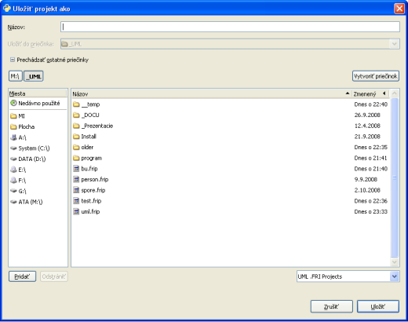

Uloženie a načítanie projektu
Projekt sa dá uložiť pomocou klávesovej skratky "Ctrl + S" alebo pomocou hlavného menu "Súbor"⇨"Uložiť".
Výzva na uloženie projektu sa zobrazuje aj pred otvorením iného projektu alebo pred ukončením aplikácie.
Prednastaveným formátom je "UML .FRI Project" (prípona .frip).
